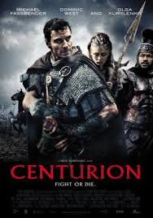
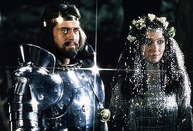
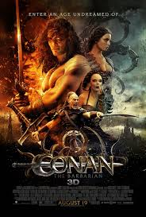
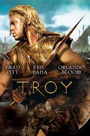

My top 5 favorites are...
Sword and sandal genre of film is a subgenre of largely Italian-made historical, mythological, or biblical epics mostly set in the Greco-Roman antiquity or the Middle Ages.
I've always had a deep interest in medieval and fantasy films, drawn to the rich worlds they create and the timeless stories they tell. There's something captivating about the blend of magic, adventure, and epic battles that transport you to another time. Whether it's the intricate politics of a medieval kingdom or the fantastical creatures that roam vast, enchanted lands, these films allow me to escape into worlds where anything is possible. The combination of myth, history, and imagination always leaves me wanting to explore more.
- Spartacus
- Centurion
- Excalibur
- Conan The Barbarian
- Troy
Honorable Mentions
- Beowulf
- The Green Knight
- Beowulf and Grendel
Spartacus, a Thracian warrior turned gladiator, became one of history’s most legendary figures. Born in the region of Thrace (modern-day Bulgaria, Greece, and Turkey), he was initially a soldier before being captured by the Romans and forced into slavery. Sold to a gladiatorial school, Spartacus rose to prominence as a gladiator and led a major slave revolt known as the Third Servile War, which shook the Roman Republic. The popular TV series Spartacus (2010–2013) dramatizes his life, focusing on his journey from a fierce warrior to a leader of a massive uprising against Roman oppression. The show, known for its brutal action and gripping storylines, highlights Spartacus's transformation from a man fighting for survival to a symbol of resistance and freedom. His legacy continues to resonate, representing both the power of defiance and the struggle for justice.
Centurion (2010) is a thrilling, fast-paced film that immerses viewers in the brutal world of Roman Britain. Set during the height of the Roman Empire, the story follows a small group of Roman soldiers who are ambushed by the elusive Picts, a tribe of warriors fiercely defending their land. Led by the determined Centurion Quintus Dias, the soldiers must navigate treacherous wilderness, fending off relentless attacks while trying to survive and escape their pursuers. The film combines intense action with a strong sense of survival, highlighting the brutal clash of civilizations and the human struggle against overwhelming odds. With its gritty realism, Centurion captures the raw tension and violence of ancient warfare, making it a gripping tale of courage and revenge.
Excalibur (1981) is a breathtaking cinematic adaptation of the Arthurian legends, bringing to life the mythic grandeur of King Arthur’s tale with striking visuals and an ethereal atmosphere. Set in a world of misty forests, shimmering armor, and enchanted swords, the film captures the beauty and brutality of medieval fantasy. With its haunting score and dreamlike cinematography, Excalibur weaves together the tragedy and triumph of Arthur’s reign, from the rise of Camelot to its fateful downfall. As a lover of King Arthur’s historical literature, this film feels like a mesmerizing tribute to the legendary tales, immersing viewers in a world where magic and destiny shape the fate of kings.
Conan the Barbarian (1982) is a mesmerizing blend of myth, brutality, and adventure, set in a beautifully crafted fantasy world of ancient kingdoms and forgotten gods. With its sweeping landscapes, towering temples, and epic battles, the film captures the raw, heroic essence of Robert E. Howard’s legendary character. The atmospheric score and striking visuals immerse viewers in Conan’s journey of vengeance and destiny. As someone who loves King Arthur’s legends and the historical depth of films like Troy, Conan the Barbarian offers a thrilling escape into a world where strength and sorcery define the fate of warriors.
Troy (2004) is a visually stunning epic that brings the legendary Trojan War to life with grandeur and intensity. From the gleaming walls of Troy to the vast battlefields where heroes clash, the film immerses viewers in the ancient world’s beauty and brutality. The story, inspired by Homer’s Iliad, captures the tragic fates of Achilles, Hector, and Paris, blending historical drama with sweeping action. As someone who loves both King Arthur’s legends and the rich historical context of epic tales, Troy is a thrilling journey into the past, where honor, love, and destiny shape the course of history.